四类自适应候选点方法：关键技术与真实效果对比
同一批6张干净背景秧苗；全部为冻结推理，无关键点标签、无反向传播。每个案例左图同时展示前三类方法，右图展示G1′的自动支撑、骨架与融合候选点。
口径修订：G1′沿茎叶分布的较密点不再被判为失败。面向表型提取时，它们可以作为样条控制点或路径采样点。当前需要继续验证的是点的分支归属、顺序以及由此计算的表型精度。
一、四类方法分别用了什么技术
方法1DINOv2注意力响应
- DINOv2 ViT-S/14-Reg冻结编码器，输入518×518。
- 提取CLS到patch的注意力响应。
- 保留99.6%高分位局部极大值并做空间去重。
- 优点是稳定、前景命中高；缺点是点少，常关注基部或显著区域，曲线覆盖不足。
方法2DINOv2局部对比峰
- 使用DINOv2最后4层平均的patch特征。
- 计算每个patch与3×3邻域平均特征的余弦差异。
- 以“中位数+6倍MAD尺度”选峰，再做局部极大值和去重。
- 能给出较多点，但对叶缘、插值和局部纹理过敏，背景命中和光度稳定性较差。
方法3DINOv2特征HDBSCAN
- 使用728×728输入下DINOv2最后层patch特征。
- 特征L2归一化后，经PCA压到最多16维。
- 加入权重0.30的二维位置坐标，用HDBSCAN自动决定簇数。
- 每个簇输出medoid。它代表特征区域中心，不保证位于秧苗骨架上。
方法4｜当前最佳G1′结构支持融合候选
- HSV饱和度与Excess Green自适应阈值产生前景，经形态学和连通域净化。
- 骨架化后提取端点、持续分叉点，并用Shi–Tomasi角点补充形状支撑。
- 加入DINOv2局部特征峰和CLS注意力作为视觉证据。
- 结构先验+DINOv2特征对比+注意力加权融合，按植株尺度做空间去重；20点仅为安全上限。
二、6张图的总体结果
| 方法 | 点数中位数 | 白底前景命中率 | 重复性F1 | 光度扰动点数差 | 面向表型的判断 |
|---|
| DINOv2注意力响应 | 2.5 | 1.000 | 0.878 | 0.0 | 稳定但覆盖偏少，可作显著性基线。 |
| DINOv2局部对比峰 | 16.0 | 0.444 | 0.719 | 4.0 | 点多但有效结构命中不足，不宜直接构造表型路径。 |
| DINOv2特征HDBSCAN | 3.0 | 0.375 | 0.343 | 0.5 | 区域聚类中心与骨架路径不一致。 |
| G1′结构支持融合候选 | 14.5 | 1.000 | 0.916 | 0.5 | 当前最佳，适合进入路径排序与表型验证。 |
三、逐图真实效果
前三列颜色由各基线图标题区分；G1′颜色含义：端点，分叉点，形状角点，DINOv2独特响应点。
clean_002｜leaf3 (49).jpg
注意力3点局部对比14点HDBSCAN 2点G1′ 14点
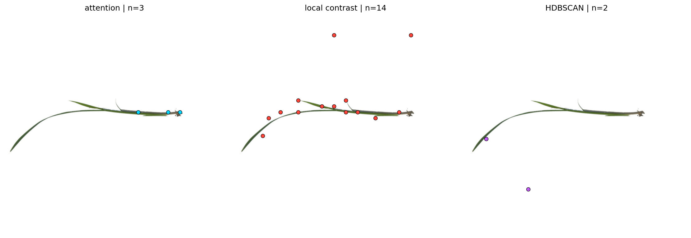
从左到右：注意力响应、局部对比峰、HDBSCAN medoid。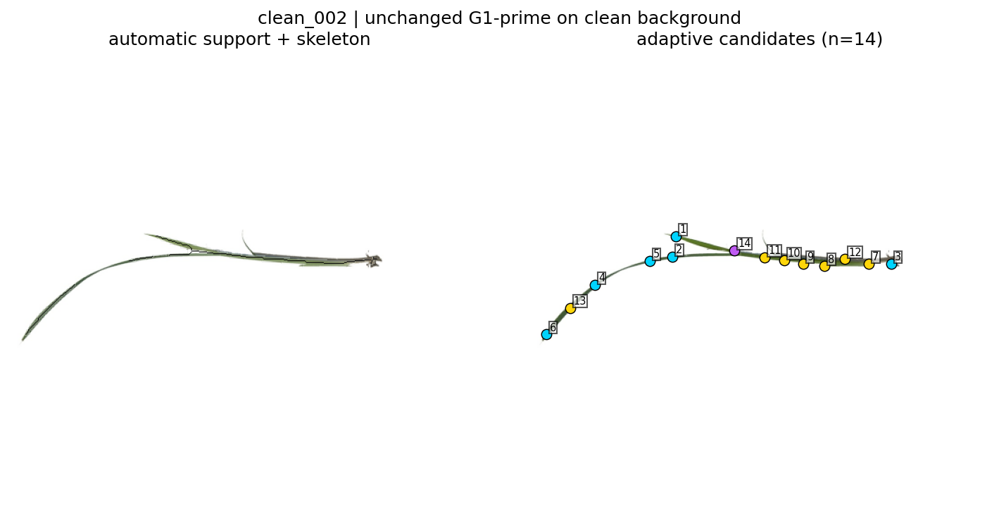
左：自动前景与骨架；右：G1′融合候选。clean_011｜leaf3 (9).jpg
注意力2点局部对比18点HDBSCAN 4点G1′ 15点
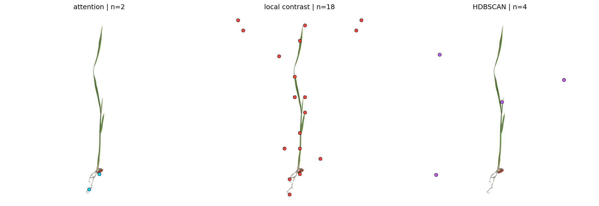
前三类基线在同一原图上的输出。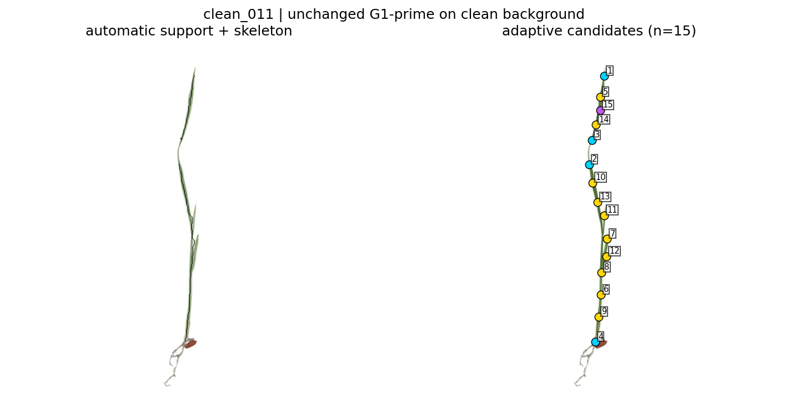
G1′沿细长结构提供较连续的曲线支撑。clean_013｜92.jpg
注意力2点局部对比23点HDBSCAN 5点G1′ 19点
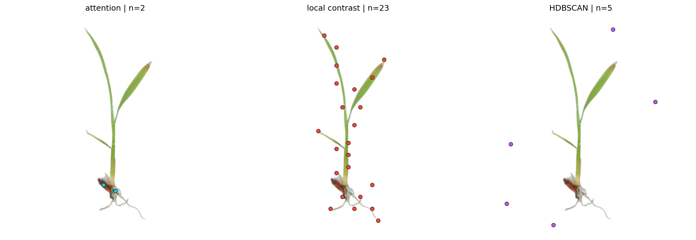
注意力覆盖不足；局部对比点多但含无效位置；聚类中心偏离植株。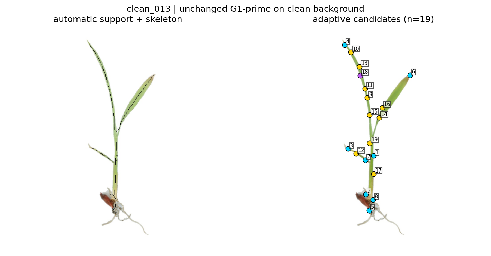
G1′覆盖主轴、叶片与端部，适合检验分支排序和样条拟合。clean_014｜leaf3 (3).jpg
注意力1点局部对比11点HDBSCAN 2点G1′ 13点
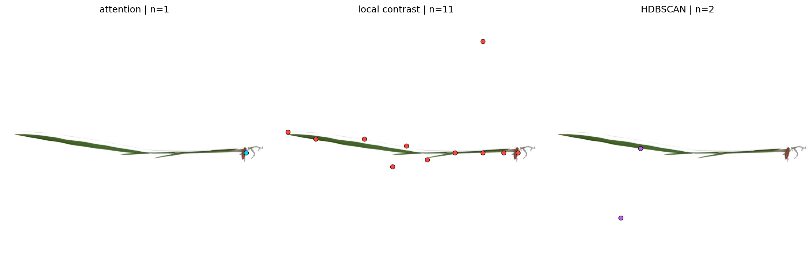
前三类基线在同一原图上的输出。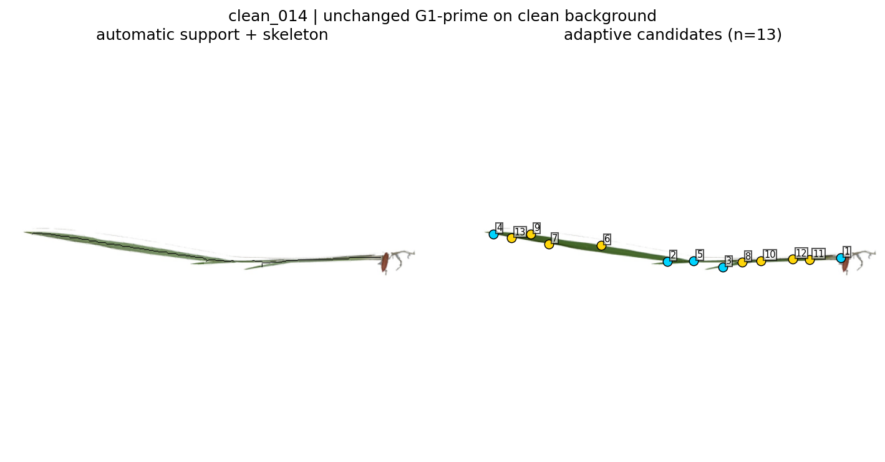
G1′为长而弯曲的茎叶路径提供连续支撑。clean_019｜leaf3 (11).jpg
注意力4点局部对比13点HDBSCAN 2点G1′ 14点
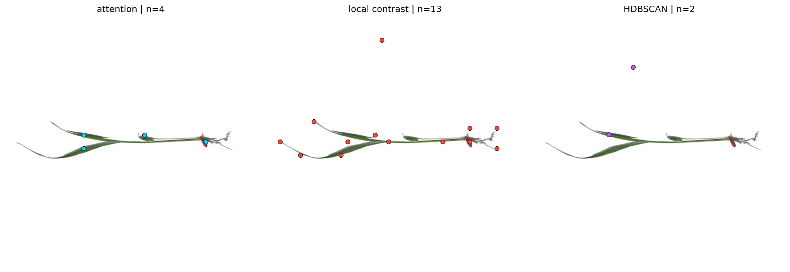
前三类基线在同一原图上的输出。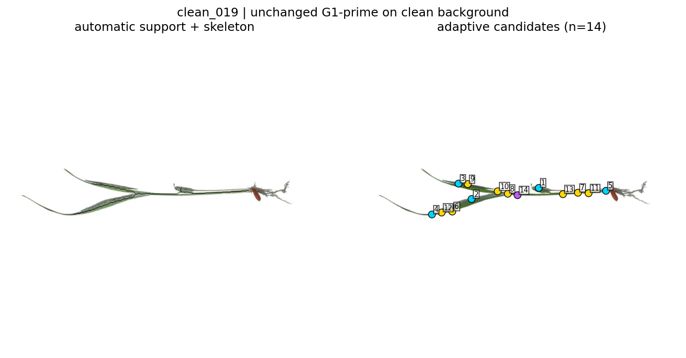
G1′覆盖多叶结构；下一步需要把点正确归入各条分支。clean_020｜31-31.jpg
注意力3点局部对比27点HDBSCAN 7点G1′ 17点
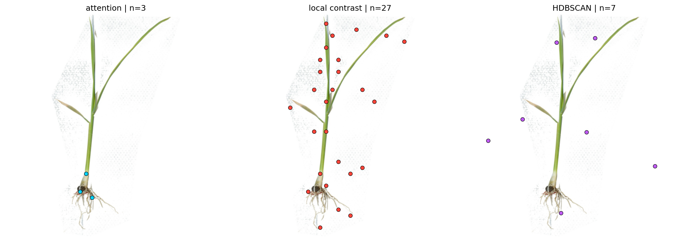
前三类基线在同一原图上的输出。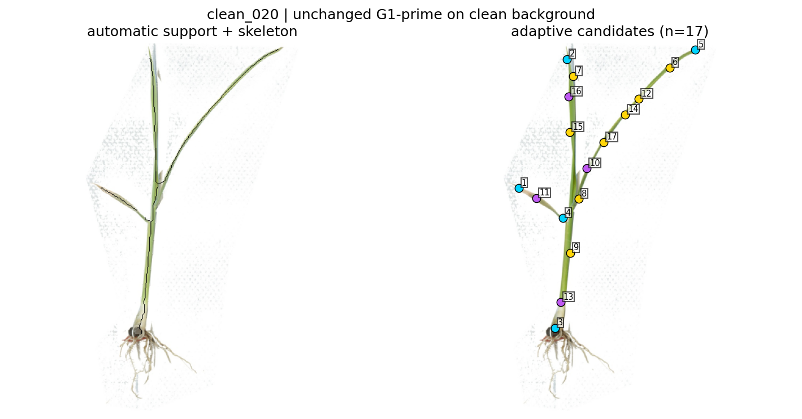
较复杂分支下，G1′仍保持较好的植株覆盖。当前判断：若目标是支撑样条曲线和表型计算，G1′是四类方法中最值得继续推进的方案。接下来不应再用“点是否足够少”筛选，而应验证这些点能否被正确连成主轴/叶片路径，以及由它们得到的长度、角度、曲率和宽度是否准确稳定。